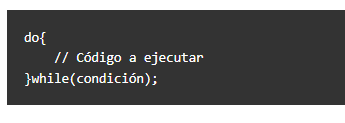

Estructuras de Control de Flujo de JavaScript
Una estructura de control es una herramienta que tienen los lenguajes de programación y que se utiliza para controlar el flujo de las operaciones durante el programa. Si un programa no tuviese estructuras de control siempre haría lo mismo, sería un camino fijo con una acción detrás de otra sin posibilidad de hacer cambios dependiendo de alguna condición
Estructura IF
La sentencia if especifica un bloque de código que se ejecuta si una condición es cierta y da la oportunidad de ejecutar otro bloque de código distinto si resulta que no es cierta
Estructura ELSE
La parte de else es opcional, y especifica un bloque de código que se ejecuta si la condición es falsa.
Estructura Multiples ELSE
También puede darse el caso de que necesitemos varias cláusulas de rebote. Eso nos permite manejar distintas posibilidades en la misma estructura de control.

Estructura SWITCH
Se utiliza para hacer diferentes acciones basadas en diferentes condiciones. Consiste en darle un valor y comprobar si ese valor coincide con algún caso.
Estructura BUCLE FOR
Nos permite ejecutar el código un número determinado de veces.
Estructura BUCLE WHILE
Permite ejecutar un bloque de código mientras se cumpla una condición que indicamos entre paréntesis
Estructura BUCLE DO/WHILE
Tiene como diferencia sobre el bucle while, que obligatoriamente siempre se ejecuta 1 vez, luego puede ejecutarse más de una vez, si se dan las condiciones
